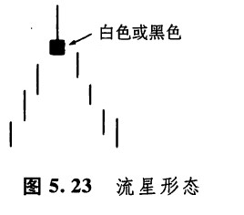
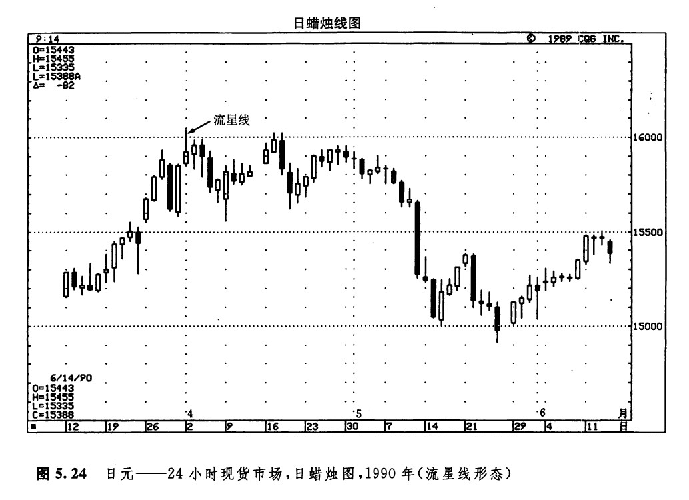
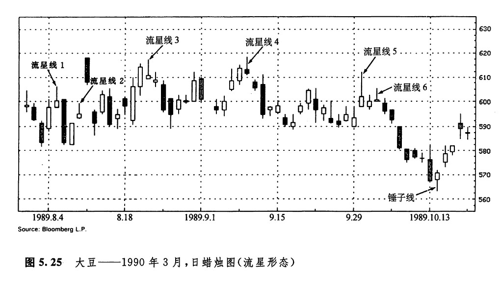
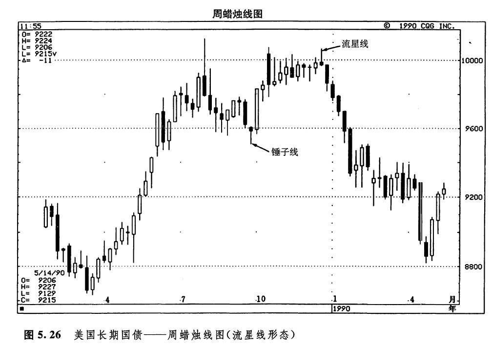
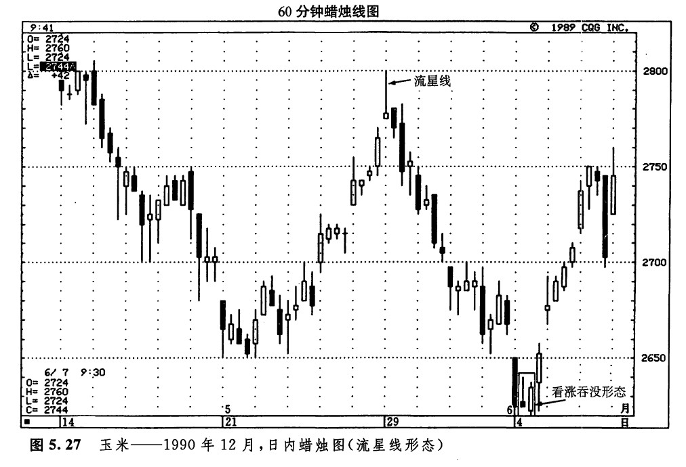
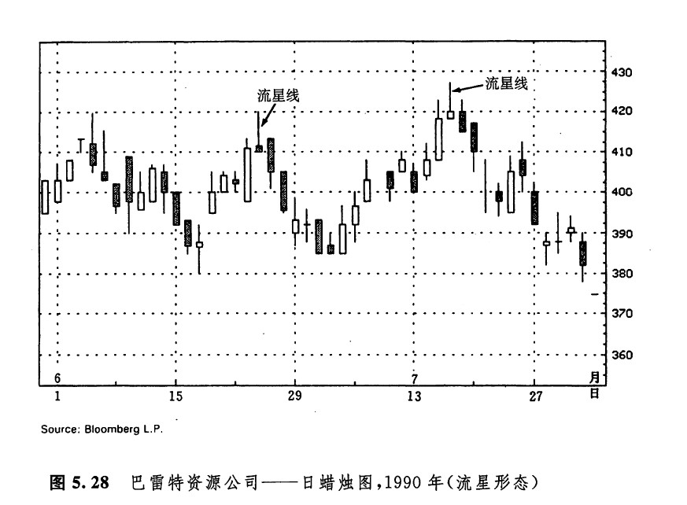
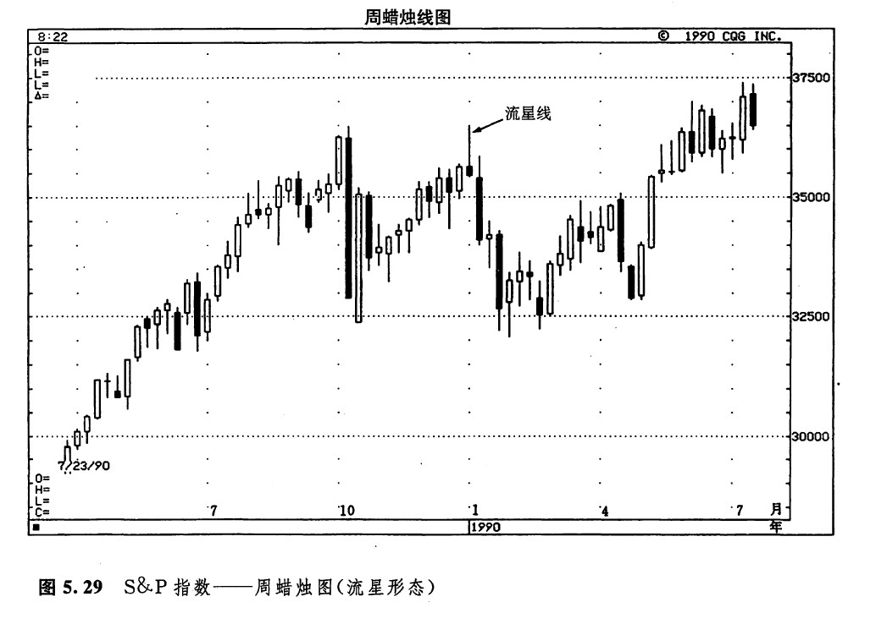
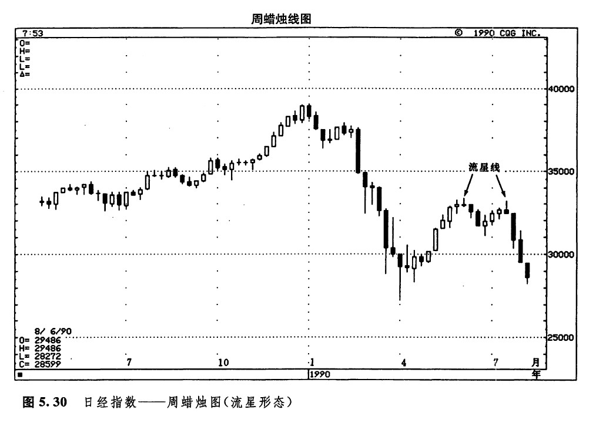

流星形态是一种二蜡烛线形态，它发出警告信号，表明市场顶部就在眼前。它的外观恰如其名称，像一颗流星。本形态的技术意义不如黄昏星形态强，通常不构成主要反转信号。如图5.23所示，在流星形态中，流星线具有较小的实体，而且实体处于其价格区间的下端，同时，流星线的上影线较长。与所有的星蜡烛线一样，流星线实体的颜色并不重要。流星线的形状形象地显示，当日市场开市于它的最低点附近，后来强烈地上冲，但最后却向下回落，收市于开市价附近。换句话说，这个交易时间单位内的上冲行情不能够维持下去。

在理想的流星形态中，流星线的实体与前一根蜡烛线的实体之间存在价格跳空。不过，我们将从几个实例中看到，这样的价格跳空并不是非有不可的。
在下降趋势后，如果出现了与流星线外观一致的蜡烛线，则可能构成一个看涨信号。这样的蜡烛线称为倒锤子线。本章后面有关部分将要讨论倒锤子线形态。
从图5.24我们可以看到，4月2日形成了一个看跌的流星形态，标志着当前的上升趋势前途不妙。图5.25是个精彩的实例，其中充分展示了流星形态和它的各种变体的作用。流星形态的变体包括下列各种情形：


1.流星形态1实际上属于流星形态的变体。其中的流星线不是一个理想的星线，因为在有关的实体之间没有价格跳空。但是从结果看，这个形态证明牛方无力维持价格上涨的势头。
2.流星形态2没有多大意义。这个形态确实符合流星线的一部分要求（即，它具有较小的实体和较长的上影线）。然而，还有一条重要的判别准则它未能满足，因为本形态既没有出现在上升趋势之后，也不是处在横向巩固区间的顶部。如此一来，我们只能将它看成具有较小实体的、意义寻常的一根普通蜡烛线。较小的实体（即一个纺锤线）反映市场进退无据、犹豫不决。而在横向交易区间的中部，市场犹豫不定自然是意料之中的事。
3.流星形态3具有流星形态的外形，却并不构成真正的星形态，因为它的实体没有从前一个实体上向上跳空。但是，我们应当把这一天的流星线放到它所处的市场大环境中考察。在流星线3的上影线的顶部，市场曾对8月上旬的高点6.18美元的水平，发起过挑战。不过，在这场交易日内的上涨行情中，牛方在尝试上述阻挡水平时精疲力竭。最后，图示的大豆市场竟以接近当日最低价的水平收市。
4.流星形态4与流星形态3极其相似。因为它的实体也没有从前一个实体上向上跳空，所以它也不是一个理想的流星形态。话说回来，在这根流星线上，市场再一次向上挑战了6.18美元的阻挡水平，但还是功亏一赞。由此证明，牛方无力夺回主动权。
（虽然流星形态3和4均算不上理想的流星形态，但是这两个例子却说明了一个重要的问题。在本书开头我就已经指出过，价格形态并不一定要十全十美才能够发出有效的交易信号。在研究蜡烛图线和蜡烛图形态的时候，我们总是应当结合其他各方面的技术线索进行综合的判断，具体情况，具体分析。因此，尽管流星形态3和4都不够理想，但是从它们所具备的流星形态的轮廓，以及它们自身的价格变化过程，结合它们所处的行情背景来看，它们就具有看跌的意义了。）
5.流星形态5又是市场向上试探阻挡水平失败的一个例子。不过，行情发展到这种地步，我们不得不对牛方企图向上推动市场的坚韧意志怀有几分敬意。随着牛方在6.18美元的阻挡水平的一次又一次碰壁，我们不禁要猜测，他们到底还要坚持多久才肯最终放弃呢？在流星形态6，我们终于得出了答案。
6.流星形态6是市场最后一次失败的向上尝试。随后，牛方终于放弃顽抗，市场开始下跌。后来，由一根锤子线结束了这段抛售行情。
图5.26所示的流星形态的实例与上述情况类似。在这个流星形态中，流星线的实体也没有从前一个实体上向上跳空。尽管如此，本形态仍然构成了重要的反转信号。这里，我们还是从有关的历史背景出发，来分析这个流星形态。在本形态处，市场对1989年第3季度的历史高点水平再一次作了向上试探，但还是无功而返。于是，这个流星形态标志着从图示的锤子线开始的上涨行情的终结。

如图5.27所示为一个经典的流星形态，它出现在5月29日的第一个小时。从此市场开始下跌，直到6月4日出现了一个看涨吞没形态，这轮行情才告完成。

在图5.28中，显示了2个流星形态，在它们的身后，均出现了明显的价格下跌过程。在图5.29中，该流星形态同时也标志着市场向上试探1989年10月至11月期间的高点的历史水平的失败。雪上加霜的险恶征兆！在图5.30中，有一对流星形态。每一个流星形态都结束了先前的上涨行情。



下一篇：倒锤子线
上一篇：十字启明星形态和十字黄昏星形态
copyright @ 2018 制作：汉钛电线，Hingtak Wire & Cable LLC